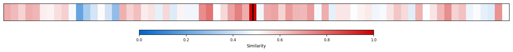

Description
This subcluster examines debates over industrial policy effectiveness and market intervention versus efficiency. Articles analyze specific policy implementations like the Inflation Reduction Act, manufacturing capacity trends, and infrastructure underinvestment, often citing economic researchers, think tanks, and government data. Content focuses on whether government spending "crowds in" or displaces private investment, regulatory changes like Chevron deference, and challenges of coordinating complex industrial policies. Unlike sibling clusters emphasizing performance metrics or climate strategy, this subcluster centers on fundamental questions of market versus state roles in economic development and policy execution challenges.
Similarity to All 70 Subclusters
Each cell represents a subcluster. Color intensity shows similarity (blue=low, red=high). Black line marks current subcluster position.
Relationship to Primary Clusters
Average similarity to each of the 15 primary clusters. Larger area = stronger relationship to that cluster.
Taxonomy Landscape
All 70 subclusters positioned by similarity (t-SNE). Current subcluster highlighted with label. Click to enlarge.

Network Connections
Current subcluster at center, connected to related subclusters. Line thickness = similarity strength.
Most Representative Articles
-
1. .@robinsonmeyer argues that Biden's decarbonization based industrial policy faces three significant
-
2. .@greg_ip notes that markets are more efficient than governments in allocating scarce resources, but
-
3. Examples of American industrial policy likely having a high opportunity cost. The Jones Act, semicon
-
4. .@hboushey46 of President Biden’s CEA argues public spending is "crowding in" private investment by
-
5. Investors must generate $5 of value for others to earn $1 themselves, a concept supported by both co
Edge Cases (Boundary Articles)
-
1. Citing increasing travel times for air and rail travel, @DLeonhardt makes the case the American privThis article is borderline because while it touches on underinvestment issues that relate to market efficiency debates, it focuses specifically on infrastructure performance problems (travel times) rather than broader industrial policy effectiveness or market intervention strategies. The content aligns more closely with infrastructure analysis than with debates about policy tools like the Inflation Reduction Act or manufacturing incentives that typically define industrial policy discussions.
-
2. New York state’s foray into industrial policy was a white elephant; $1 billion investment in a TeslaThis article is borderline because while it discusses a specific industrial policy failure (New York's Tesla investment), it focuses narrowly on documenting financial losses rather than engaging with the broader theoretical debates about industrial policy effectiveness versus market efficiency that define the cluster. The article reads more like a case study of policy failure than an analysis of the fundamental tensions between government intervention and market mechanisms.
-
3. Low-cost airlines like Spirit & Frontier continue to exert downward pressure on ticket prices, benefThis article is borderline because while it touches on market efficiency through airline competition and pricing pressures, it lacks any discussion of government industrial policy or regulatory intervention that defines the cluster's core focus. The article is purely about private market dynamics and competitive pricing rather than debates over policy effectiveness or government market intervention.
Original Dendrogram